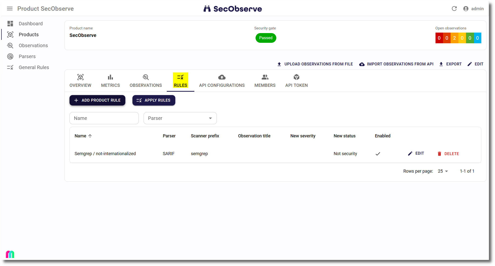

Rule engine
Sometimes the result of a scanner doesn't fit to the product's needs. Either the severity or the status need to be adjusted. To avoid having to do many manual assessments regularly, a built-in rule engine can adjust severity and/or status directly with the import of observations. This can remove a lot of noise, for example by setting observations to False positive, in case the ruleset of the scanner can not be adjusted appropriately.

Rules can be managed in two ways:
- General rules will be applied for all products. A product can be excluded from general rules in its settings.
- Product Rules are only valid for one product.
These fields are used to decide if a rule shall be applied for an observation:
- Parser (mandatory): The observation has been imported with this parser.
- Scanner prefix (optional): The observation has been generated by a scanner which name starts with this prefix. A prefix is used here because the scanner field in the observation often contains the version of the scanner as well, which is typically irrelevant for the rule.
- Observation title (optional): Regular expression to match the observation's title
- Origin component name:version (optional): Regular expression to match the component name:version
- Origin docker image name:tag (optional): Regular expression to match the docker image name:tag
- Origin endpoint URL (optional): Regular expression to match the endpoint URL
- Origin service name (optional): Regular expression to match the service name
- Origin source file (optional): Regular expression to match the source file
If an observation matches all fields containing a value, than the new severity and/or new status is set in the observation and a comment is stored in the Observation Log.